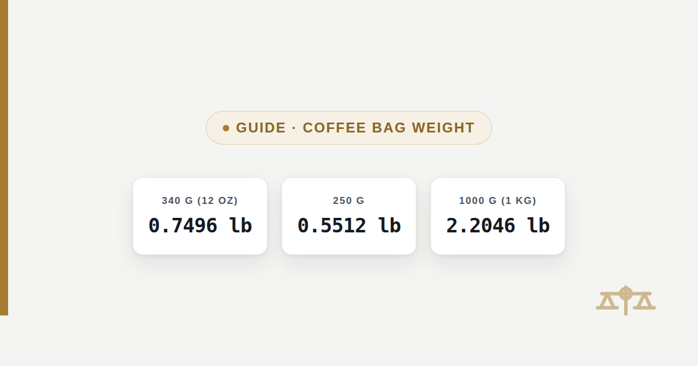

Coffee Bag Sizes in Pounds: 250g, 340g and 1kg Converted
Coffee bags are labeled in grams almost everywhere except the US retail shelf, which still prints ounces and pounds. Here is every common size converted both ways.

A standard 340 gram coffee bag, the size printed as "12 oz" on most US retail shelves, converts to 0.7496 pounds. This guide converts every common coffee bag size — 250 g, 300 g, 340 g, 500 g and 1 kg — to pounds, and shows how to compare price per pound when two bags aren't the same size to begin with, which has become the actual pain point as bag sizes have started drifting.
The quick answer for the four sizes people buy most
340 grams (12 oz) equals 0.7496 pounds, and 250 grams equals 0.5512 pounds — those are the two sizes that show up on most specialty roasters' shelves. A 1 kilogram bag, common for cafes and heavy home drinkers, equals 2.2046 pounds. Every figure here uses the exact factor of 453.59237 grams per pound, the same one the grams to lbs converter uses for any weight not listed on this page.
Every common coffee bag size converted to pounds
The table below runs from the smallest common retail bag to the bulk sizes roasters sell to cafes. A 12 ounce bag and a 340 gram bag are the same bag with two different labels, not two different products — 12 ounces multiplied by 28.349523125 grams per ounce comes to 340.1943 grams, which roasters round down to 340 g on the package.
| Bag size | Pounds (lb) | Pounds & ounces |
|---|---|---|
| 227 g (8 oz, "1 cup" size) | 0.5004 lb | 0 lb 8.01 oz |
| 250 g | 0.5512 lb | 0 lb 8.82 oz |
| 300 g | 0.6614 lb | 0 lb 10.58 oz |
| 340 g (12 oz) | 0.7496 lb | 0 lb 11.99 oz |
| 350 g | 0.7716 lb | 0 lb 12.35 oz |
| 500 g | 1.1023 lb | 1 lb 1.64 oz |
| 1000 g (1 kg) | 2.2046 lb | 2 lb 3.27 oz |
| 2000 g (2 kg) | 4.4092 lb | 4 lb 6.55 oz |
| 2300 g (5 lb bulk bag) | 5.0706 lb | 5 lb 1.13 oz |
The 2,300 gram row exists because some US roasters sell a "5 pound" bulk bag that is actually labeled in grams by an overseas supplier: 2,300 grams comes to 5.0706 pounds, close enough to 5 pounds that it gets marketed as a 5 lb bag, but the two numbers aren't identical — a genuine 5 lb bag would hold 2,267.96 grams.
Why coffee bags are getting smaller
Coffee bags have been shrinking from the long-standard 340 gram (12 oz) size down to 300 grams or even 250 grams, while the price on the shelf often stays the same or rises only slightly. This is a real, ongoing trend in specialty coffee, driven mainly by rising green coffee bean costs: roasters facing higher input prices have a choice between raising the sticker price outright or quietly reducing the bag size, and many have chosen the second option because a smaller bag at the same price draws less shopper attention than a bigger price tag does. Coffee industry trade coverage and consumer-facing sites that track this practice (commonly called "shrinkflation") have documented roasters moving from 16 oz to 14 oz to 12 oz, and now from 12 oz down to 10 oz.
The grams-to-pounds conversion is what makes the effect visible. A 340 gram bag is 0.7496 pounds of coffee. A 300 gram bag is 0.6614 pounds. That's 0.0882 fewer pounds in every bag — about 11.8% less coffee — even though both bags can sit on the same shelf at the same price and look interchangeable at a glance.
Comparing price per pound when bag sizes don't match
The only fair way to compare two coffee bags of different sizes is price per pound, not price per bag. Once a shelf has 340 gram, 300 gram and 250 gram bags sitting side by side, the sticker price alone stops meaning anything, because a lower price can still be a worse deal per pound if the bag is small enough.
Bag A: 340 g for $18.00 → 0.7496 lb → $24.01 per pound
Bag B: 300 g for $18.00 (same price, smaller bag) → 0.6614 lb → $27.22 per pound
Bag C: 250 g for $18.00 (same price again) → 0.5512 lb → $32.66 per pound
Bag B: 300 g for $18.00 (same price, smaller bag) → 0.6614 lb → $27.22 per pound
Bag C: 250 g for $18.00 (same price again) → 0.5512 lb → $32.66 per pound
All three bags cost $18.00 on the shelf. Shrinking the bag from 340 grams to 300 grams at that same price raises the real cost by 13.4% per pound. Shrinking it further to 250 grams raises the real cost by 36% per pound, entirely through bag size, with the sticker price never changing. To do this comparison for a price and bag size not shown here, divide the price by the pounds figure from the table above.
Buying in bulk: 1 kg bags and larger
A 1 kilogram bag, at 2.2046 pounds, is usually the better per-pound value over multiple smaller bags of the same coffee, because roasters spend less on packaging and labor per pound at the larger format. A worked comparison shows the gap clearly:
1000 g bag for $32.00 → 2.2046 lb → $14.51 per pound
340 g bag for $12.00 (same coffee, smaller format) → 0.7496 lb → $16.01 per pound
340 g bag for $12.00 (same coffee, smaller format) → 0.7496 lb → $16.01 per pound
In this example, buying the 1 kilogram bag instead of three 340 gram bags (which would cost roughly $36.00 total for 1,020 grams) saves money per pound and delivers slightly more coffee for less. The trade-off is freshness: a 1 kilogram bag opened at home takes far longer for one or two people to work through than a 340 gram bag, and roasted coffee loses aroma over the weeks it takes to empty a bulk bag. Buying in bulk is a better per-pound value only if the coffee will actually be used before it goes stale, typically within three to four weeks of the roast date.
Roasters selling to cafes commonly use 2 kilogram (4.4092 lb) or 2,300 gram (5.0706 lb) bags, sizes built around commercial batch brewing rather than home use.
FAQ
Frequently asked questions
How many pounds is a 12 oz bag of coffee?
A 12 oz bag of coffee is 0.7496 pounds, because a 12 oz coffee bag is packed to 340 grams and 340 grams equals 0.7496 pounds. As a fraction, 12 ounces is exactly three-quarters of a pound (0.75 lb); the 0.7496 figure is the packed-weight conversion, which is close to but not identical to the ounce-based fraction because 340 g is a rounded packaging figure, not an exact 12.00 oz.
How many pounds is 1 kg of coffee?
1 kilogram of coffee is 2.2046 pounds. This comes directly from the definition of the pound: 1,000 grams divided by 453.59237 grams per pound equals 2.2046 pounds, or 2 lb 3.27 oz written as pounds and ounces.
What is 250 grams of coffee in pounds?
250 grams of coffee is 0.5512 pounds, or 1 lb 8.82 oz once rounded. This is the most common specialty coffee bag size worldwide outside North America, where the 340 gram (12 oz) bag has historically been the standard.
Why are coffee bags getting smaller instead of more expensive?
Roasters facing higher green coffee costs often shrink the bag size rather than raise the sticker price, because a smaller bag at an unchanged price is less noticeable to shoppers than a higher price tag. This practice, commonly called shrinkflation, has moved many bags from 340 grams (12 oz) down to 300 grams or 250 grams over the past several years, while the shelf price often stayed flat or rose only slightly.
How many cups of coffee does a 12 oz (340 g) bag make?
A 12 oz (340 gram) bag typically makes somewhere between 17 and 25 cups, depending on how strong the coffee is brewed and how large a "cup" is measured. Using a standard 1:16 coffee-to-water brewing ratio, 340 grams of coffee grounds makes roughly 5.4 liters of brewed coffee, which is closer to 20 cups at a 6-ounce serving size or about 15 cups at a 12-ounce mug size.
Is a bigger coffee bag always cheaper per pound?
Usually, but not automatically — it depends on the actual price and weight printed on each bag, not just which bag looks bigger. A 1,000 gram bag priced at $32.00 works out to $14.51 per pound, cheaper than a 340 gram bag of the same coffee priced at $12.00, which comes to $16.01 per pound; but a promotional price on a smaller bag can sometimes beat an unusually marked-up large bag, so it is worth converting both to price per pound before assuming the larger bag wins.
Sources
- International Yard and Pound Agreement, 1959 — defines the international avoirdupois pound as exactly 453.59237 g
- NIST Special Publication 811, Guide for the Use of the International System of Units (SI) — exact conversion factors